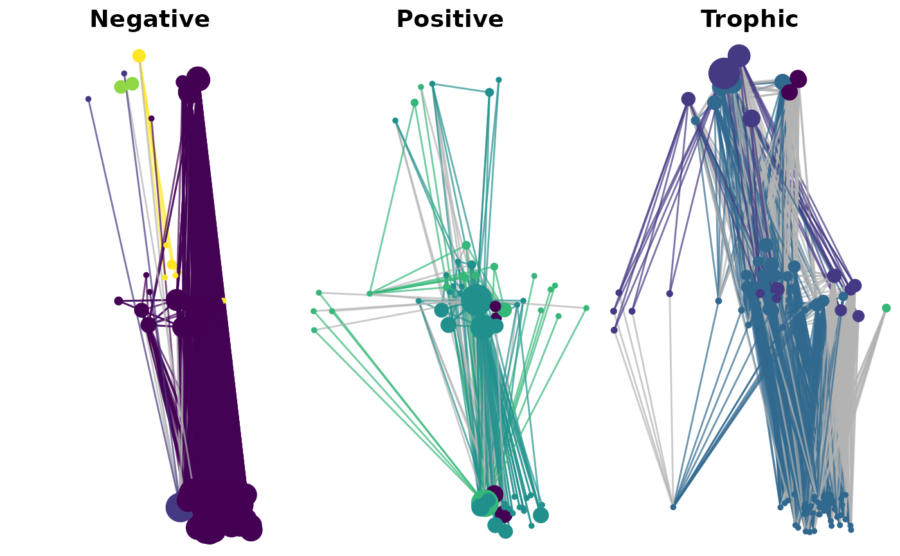

Plot Modular Structure of a Multiplex Ecological Network
Source:R/plot_multiplex.R
plot_multiplex_modules.RdThis function visualizes each layer of a multiplex ecological network, with nodes colored
by module membership and sized by Infomap flow values. It returns a list of ggplot objects.
Usage
plot_multiplex_modules(
g_list,
communities,
module_palette = NULL,
layout_graph = NULL,
scale_factor = 500,
y_by_trophic = FALSE,
show_labels = FALSE
)Arguments
- g_list
A named list of
igraphobjects (e.g., fromreadNetwork()), each representing one layer.- communities
A data frame from
run_infomap_multi()$communities, containingnode,module,layer,flow.- module_palette
Optional named color palette for module IDs (default uses
viridis::viridis).- layout_graph
Optional igraph object for layout (default is aggregate union of all layers).
- scale_factor
Numeric multiplier for node size scaling by flow (default: 500).
- y_by_trophic
Logical; if TRUE, adjusts vertical layout position using trophic level from "Trophic" layer (default: FALSE).
- show_labels
Logical; if TRUE, show node names using ggrepel (default: FALSE).
Examples
fileName <- system.file("extdata", package = "multiweb")
dn <- list.files(fileName, pattern = "^Kefi2015.*\\.txt$")
g_list <- readNetwork(dn, fileName, skipColumn = 2)
names(g_list) <- c("Negative", "Positive", "Trophic")
res <- run_infomap_multi(g_list, layer_names = names(g_list))
plots <- plot_multiplex_modules(g_list, res$communities, y_by_trophic = TRUE)
cowplot::plot_grid(plotlist = plots, ncol = 3)
#> Warning: Removed 30 rows containing missing values or values outside the scale range
#> (`geom_point()`).
#> Warning: Removed 37 rows containing missing values or values outside the scale range
#> (`geom_point()`).
